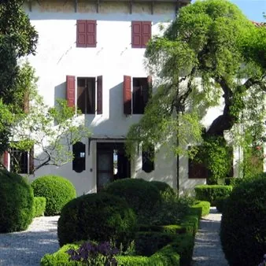

dom 8 nov
4° Festival delle Dimore Storiche - Villa della Donna Stoinoff
L’impianto della casa, originariamente rurale, parrebbe seicentesco, sulla base dell’analisi della volta posta sopra le scale in pietra, che da terra portano al primo piano. L’edificio fu completamente rimaneggiato nel corso del XIX secolo, per adattarlo alle esigenze dei vari…
 Indicazioni
Indicazioni
- Costi e prenotazioni
- Costo non indicato · Prenotazione non indicata
- Programma
- Programma da verificare. Apri la fonte ufficiale per orari e possibili aggiornamenti.
- In caso di maltempo
- Nessuna indicazione specifica pubblicata.
- Note
- Acquisito automaticamente dalla fonte.
L’EVENTO
Descrizione completa
Il Festival delle Dimore Storiche del Friuli Venezia Giulia , organizzato dall’Associazione Dimore Storiche Italiana – Sezione FVG (A.D.S.I. FVG), promuove il patrimonio culturale, storico, artistico e paesaggistico delle dimore storiche private, abitate ancor oggi dai proprietari, che aprono le proprie case, giardini e parchi ai visitatori, facendo loro da guide per raccontare le storie suggestive di cui sono impregnate.
Accesso alle visite
La visita guidata alla dimora è offerta ai visitatori che aderiranno per donazione libera alla raccolta fondi (minimo €10 a persona, gratuita per minorenni accompagnati; titolari della tessera Socio ADSI e Amico delle Dimore Storiche; titolari di Disability Card; giornalisti accreditati da ADSI FVG), che serviranno a sostenere i progetti di valorizzazione turistica del patrimonio culturale privato di ADSI FVG. Villa della Donna Stoinoff
L’impianto della casa, originariamente rurale, parrebbe seicentesco, sulla base dell’analisi della volta posta sopra le scale in pietra, che da terra portano al primo piano. L’edificio fu completamente rimaneggiato nel corso del XIX secolo, per adattarlo alle esigenze dei vari proprietari che si susseguirono nel tempo, attraverso la realizzazione di pertinenze e annessi agricoli (granaio, stalla, fienile). Attorno al 1850 la proprietà era ancora intestata alla famiglia Della Donna, possessori di numerosi immobili e terreni in Valvasone e nei comuni limitrofi. L’attuale giardino all’italiana risale al 1936 ed è composto da aiuole delimitate da siepi di bosso, risalenti all’epoca. L’ingresso della villa è enfatizzato dalla presenza di un breve viale d’ingresso caratterizzato dalla presenza di 4 tigli, piantumati nei primi anni del ‘900. Nel giardino sono presenti alberi secolari di pregio, quali un osmathus fragrans, una sophora japonica pendula ed una magnolia grandiflora. Sul retro della villa è presente un gelso secolare, l’orto in cassoni, coltivato con il metodo sinergico ed una recente zona a frutteto, piantumata con varietà antiche.
Contatti Villa Donna Stoinoff:
Tel: 338 5899420
Date e orari visite
08/11/2026
ore 10:00 - 11:00 - 12:00 - 14:00 - 15:00 -16:00
Informazioni e prenotazioni
IL PROGRAMMA
Programma e orari
Appuntamenti raccolti dalle fonti elencate. Dove manca un orario, non è ancora disponibile in questa scheda.
Programma pubblicato
- ore 10:00 - 11:00 - 12:00 - 14:00 - 15:00 -16:00
INFORMAZIONI UTILI
Prima di partire
- Controllare la fonte prima di partire.
ORGANIZZAZIONE